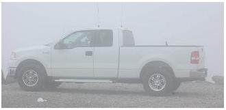
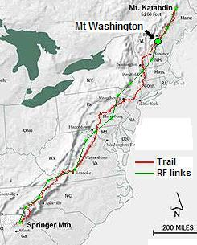
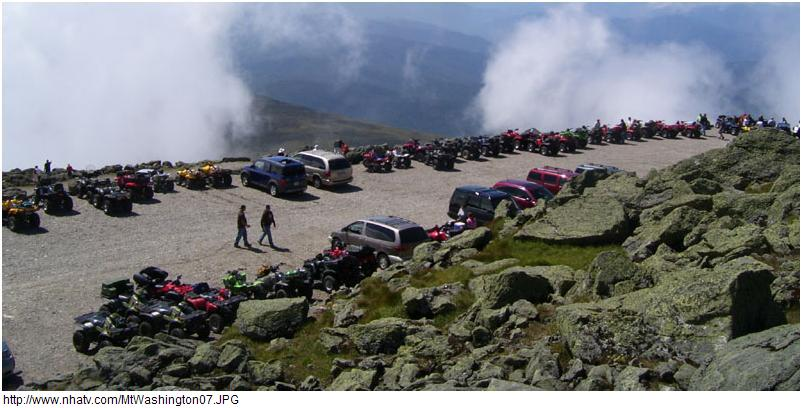
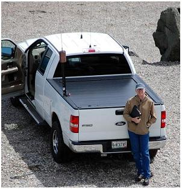
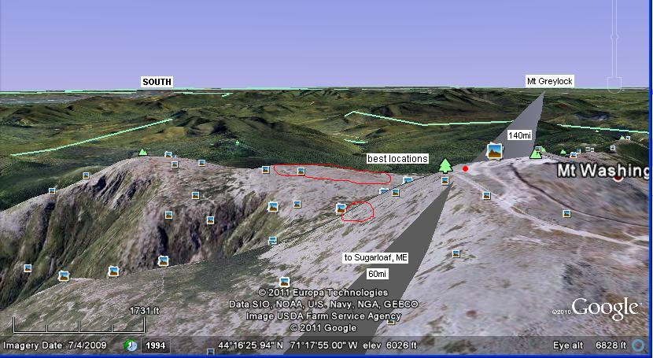
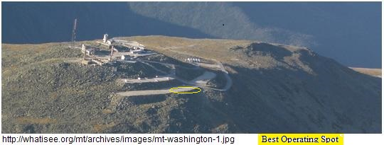
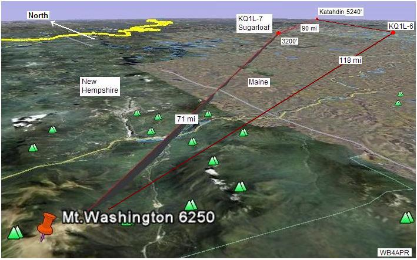

2014 SUCCESS! NT1I reports: "We got to the top about 9:30 and were met with a heavy wind and light rain. The temperature was 45 degrees. I first lashed the painters pole to the bike hitch and then assembled the X300 dual band vertical antenna, connecting the ultraflex coax before mounting the antenna base to the pole and scooting it up as far as the wind would allow. I hooked the coax to the Kenwood d710 and the power to a lead acid automotive type battery. By 10:05 we were waiting for voice contact on UHF. We were also setup to do packet at the same time. I went up to the top (we setup in the lower left parking lot) to use the facilities, and overheard WS1SM SOTA operation at the picnic table talking to MT EQUINOX on 146.52. So I finished my business and went back down. Geoff KB1POR had also heard Equinox on 2mtrs and made voice contact to EQUINOX while I was up top.
Geoff had a WiFi hotspot set up and I was using APRSISCE32 to send messages via the ANSRVR AT group over the WiFI. But when the first packets from EQUINOX came through I had internet difficulties and couldn't send any messages. I decided to fall back to taking pictures of teh packets but the Android device wouldn't function as a camera as the sd card was missing! Then we had cell phone contact with station 14 and soon after packets, and voice on uhf. Then we started seeing packets from GDHILL 8 show up. I set up my pay as you go WiFi hot spot and was then able to post to the ANSRVR again So by 12:18PM we had 8, 11, 12, 14, 15 packets.
I think you know the rest. we saw springer-1 Yep what a relief and it went all the way up to Maine..
2013 Planning: John Bates, NT1I is leading the effort this year. Hopefully they can stay far away from all the radio transmitters at the peak and better hear the new Mt Equinox and Sugarloaf. See the summary spread sheet.
2012 Planning: Again, KB1LDM, KB1POR and N7FMH, Fred planned on going to MT Washington to man up forthe Golden Packet and Operation ON-Target experiment on Saturday 21 July.
2011 Success: Fred, N7FMH was planning the treck, but couldn't make it. So AA1WI, Brian volunteered to change his plans from Sugarloaf to Mt Washington. Best we can tell he had a D710 (because we saw it in a photo). Apparently the RFI and intermod was so high up there, that he was unable to make any maaningful contact on 445.925 coordination frequency. Further compounding the problem was that there was no NewHempshire relay this year. This meant that we had to hope that the link from Grelyock to Mt Washington could be made in one hop. See the RF link to Greylock and the RF link to Katahdin. Anyway, Brian set up MTWASH-13 and was seen at least as far as the GD-hill (non working digi) station and also on KATAHDIN. See his 2011 report.
An interesting contributing story was the conincidental presence of Geoff, KB1POR also on top of MT washington for the day. He also contributed significantly to the event doing a QSO with Katahdin direct. See the KB1POR story.
2010 was vacant: Jerry Belden, N2FSD attempted to put together a team with his ATV vehicle at the NH ATV club event that was also on the mountain that day. Never heard what happened and why they were not seen... For 2009 , Mt Washington was operational though it was quite isolated without either of the adjacnet sites on the air. See the 2009 report.
See the Golden Packet plan. . This is one of the 15 hill-top sites from Georgia to Maine we hope to visit this summer on 26 July for 6 hours to attempt to relay a text message using hand-held radios the 2000 mile length of the Appalachain trail. This is to be a no impact Leave-No-Trace type of event of a few individuals at each site. . Other hikers equipped with APRS ham radios are welcome to participate with advance notice.
Mount Washington is an outstanding radio location in Northeast New Hempshire. It has tourist access and, unfortunatelly, extreme weather that can change rapidly. We are still looking for a team in that area.
 ALTITUDE: . . . . . . . . . . . 6280 feet (in the clouds. See John's truck 2009 ==>)
POSITION:. . . . . . . . . . . . 44-16.21N / 71-18.20W
LINK NORTHEAST: . . . Sugarloaf, ME
See RF details
by KX4O
LINK SOUTHWEST: . . . New Hampshire Link.
See RF details

VOICE REPEATER:. . . .448.975 T100
ECHOLINK NODE: . . . W1PIG repeater node # 15061 on 145.390
INTERFERRENCE: . . . 146.655 T100 co-located repeater on the mountain
TEAM LEADER: . . . . . . Jerry Belden N2FSD may be on the mountain that day for 2010
. . . . . . . . . . . . . . . . . . . . . . John and Michele Briggs KC6TVF (2009, but not in area any longer)
. . . . . . . . . . . . . . . . . . . . . . Paul KA5FPT (2009, but not in area any longer)
(see John and Paul in the wind).

As you can see, lots of room at the top even after the $28 entrance fee! And to the right you can see John on a summer day.
 
Best Location: As you can see from the google path views above, the ideal location for the APRS digiepater is at the southern tip of the parking lot. EXCEPT that it is still too close to all the QRM, RFI and intermod. The ideal station could be hiked several hundred feed down the ridge to the south and still have a perfectly clear shot to Greylock and to Sugarloaf. There is a huge area out there (though unprotected)...

Its a pretty balt spot up there and very exposed to the elements. In the view above, you can see the two levels of parking lots and the official weather station buildings on the top.
COMMENTS: .
John Brigggs KC6TVF reports: As of 14/22 July, We are good to go on Mt Washington and will monitor the UHF simplex and repeater above. Will also have HF for fun... I have been in contact with Dale Paquin to the south. I have not been able to contact Dave, KQ1L... I'll be in the Mt Washington area on Saturday 25 July and do some experimenting on regular APRS Freq. If I need anything I can coordinate with Paul KA5FPT to bring it on the 26th. KQ1L thinks the link should be no problem and I have been on Mt Washington and the line of sight is breath taking. So no testing has been done to date. Access will be no problem on the Mt Washington road, provided there is no severe weather that day.
Prevoiusly reported: We more than likely will be supporting the Maine Forest Rally the weekend before (17 and 18 July). We might be able to get an extra person or two from the MARA club to help out on the 26th.

The from Greylock goes 48 miles to the N1NCI-3 digipeater in New Hempshire which will be set to the event frequency termporarily for this event. From there it goes the 100 miles to Mt Washington as shown above.
Originally, the shot to the Sugarloaf resort area looked promising, but further investigation revealed the site there was hard to access and had a very high RF interference potential. For this reason, a more circuitous route to the south via the KQ1L-6 digipeater was selected:

The path from Mt Washington to the KQ1L-6 digipeater is 91 miles appears to be a good link as shown by KX4O's analysis.

DETAIL LINK ANALYSIS BY KX4O: Be sure to follow the two RF links at the
top of this page to see the excellent and very detailed RF link analysis
performed for every link in this project by KX4O John Huggins.
Each RF link shows the terrain map
elevations, the AT trail in yellow, the RF path loss itself
including fresnel zones and finally a
statistical plot of the probabilities of link availability. We will very
much be looking at the results of this project compared to the pre-event
analysis and predictions. All of KX4O's links are shown on his
AT Links Page.
From there, it goes the final 91 miles to Mount Katahdin.
Bob, WB4APR
See my other GENERAL page on APRS applications and Ideas on the AT
Return to the APRS HOMEPAGE or SiteMap.
{kind=link}
{kind=link}
{kind=link}